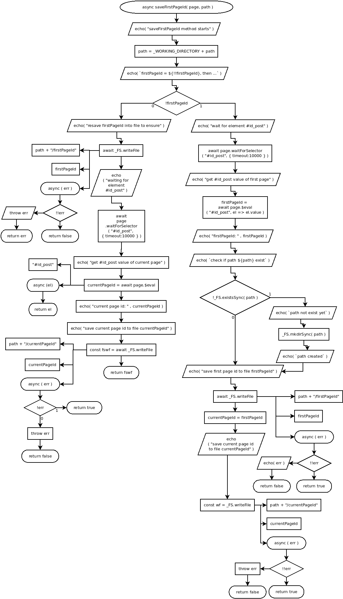

async saveFirstPageId( page, path )
Flowchart

Code
async saveFirstPageId( page, path ){
echo( "saveFirstPageId method starts" );
path = _WORKING_DIRECTORY + path;
echo( `firstPageId = ${!!firstPageId}, then ...` );
if( !firstPageId ){
echo( "wait for element #id_post" );
await page.waitForSelector( "#id_post", { timeout:10000 } );
echo( "get #id_post value of first page" );
firstPageId = await page.$eval( "#id_post", el => el.value );
echo( "firstPageId: " , firstPageId );
echo( `check if path ${path} exist` );
if( !_FS.existsSync( path ) ){
echo( `path not exist yet` );
_FS.mkdirSync( path );
echo( `path created` );
}
echo( "save first page id to file firstPageId" );
await _FS.writeFile(
path + "/firstPageId",
firstPageId,
async ( err )=>{
if ( !!err ){
echo( err );
return false;
} else {
return true;
}
}
);
currentPageId = firstPageId;
echo( "save current page id to file currentPageId" );
const wf = _FS.writeFile(
path + "/currentPageId",
currentPageId,
async ( err )=>{
if ( !!err ) {
throw err;
return false;
} else {
return true;
};
}
);
} else {
echo( "resave firstPageId into file to ensure" );
await _FS.writeFile(
path + "/firstPageId",
firstPageId,
async ( err )=>{
if ( !!err ){
throw err;
return err;
} else {
return false;
}
}
);
echo( "waiting for element #id_post" );
await page.waitForSelector( "#id_post", { timeout:10000 } );
echo( "get #id_post value of current page" );
currentPageId = await page.$eval( "#id_post", async el => el.value );
echo( "current page id: " , currentPageId );
echo( "save current page id to file currentPageId" );
const fswf = await _FS.writeFile(
path + "/currentPageId",
currentPageId,
async ( err )=>{
if ( !!err ){
throw err;
return false;
} else {
return true;
}
}
);
return fswf;
}
}